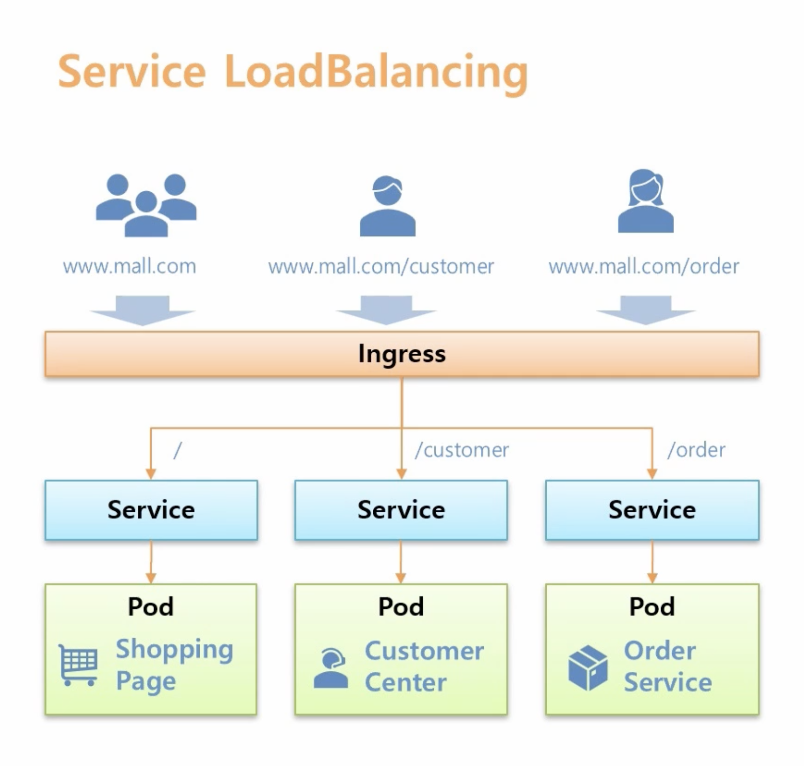
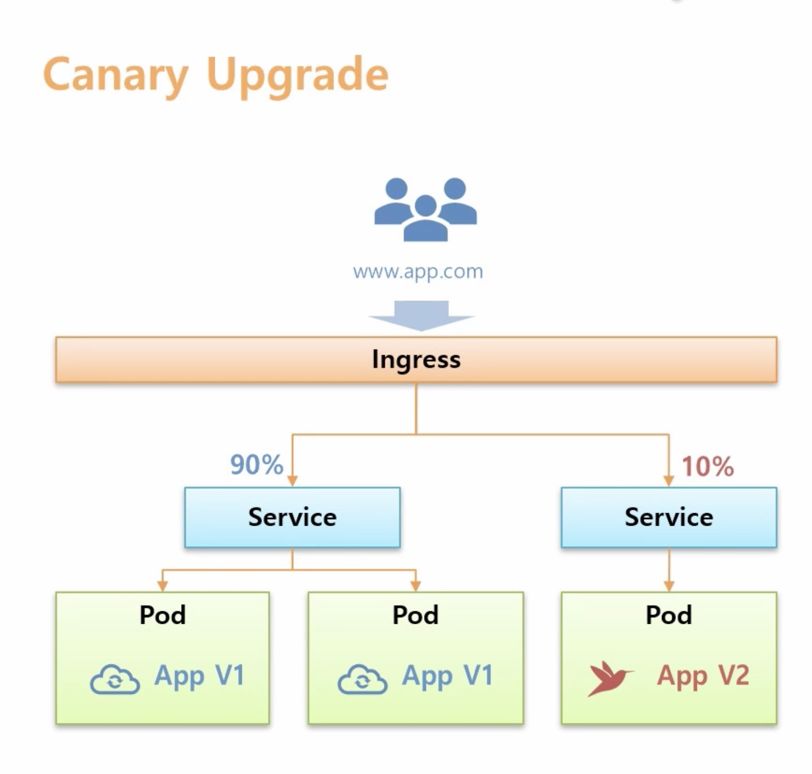
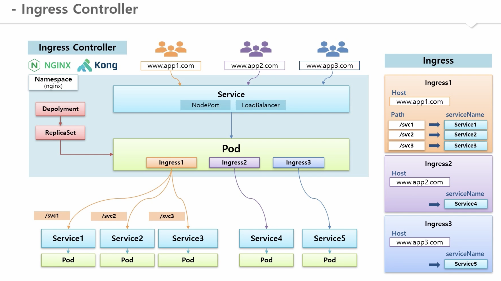
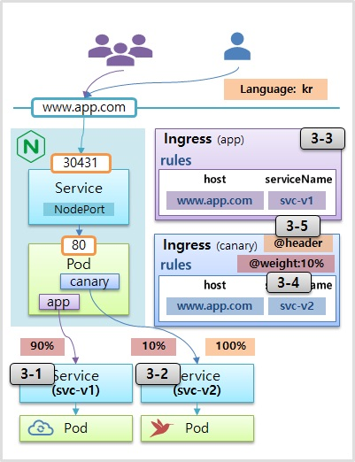
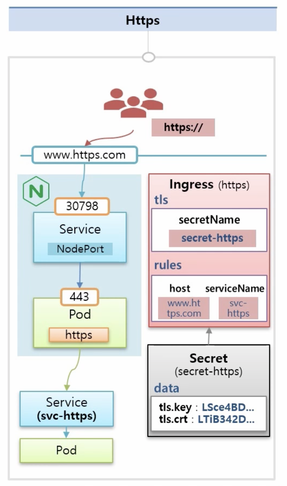
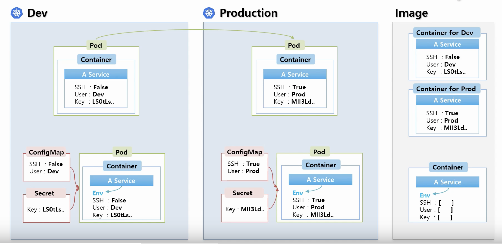
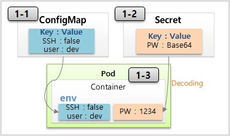
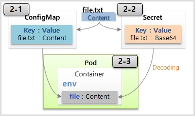
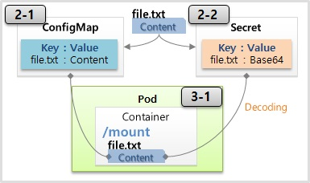

“인그레스 - 쿠버네티스 기본편 (4)”
인그레스
정의
- 클러스터 외부에서 안으로 접근하는 요청들을 어떻게 처리할지 정의해둔 규칙 모음
- 실제로 동작시키는 것은 인그레스 컨트롤러
사용목적
- 클러스터 외부에서 안에 있는 파드에 접근
- 서비스와의 차이점은 주로 L7 영역의 통신을 담당해서 처리
- Service LoadBalancing
- Canary Upgrade
- SSL 인증서 처리
- 도메인 가상 호스팅
Service LoadBalancing

플로우
- 쇼핑 페이지 / 고객센터 / 주문서비스를 파드별로 생성
- 하나의 서비스가 문제 생길시 다른 서비스에 영향 안받음
- pod에 서비스를 연결
- 각각의 도메인에 패스를 나눠서 접근하도록 하고싶을때 일반적으로 패스와 각 서비스 ip를 이어줄수 있는 l4나 l7스위치가 필요
- 쿠버네티스에서는 인그레스가 그 역할을 대신해줌
별도의 ip 로드밸런싱 장비가 필요 없음
Canary upgrade
“옛날 광부들이 광산에 유독가스가 있는지 확인하려고 가스에 민감한 카나리아와 함께 광산에 들어간 사실에 아이디어를 얻었다. 신규 파드를 배포할떄 한꺼번에 앱 컨테이너 전체를 교체하지 않고 기존 버전을 유지한 채로 일부 버전만 신규 파드로 교체한다.”

- 인그레스를 사용하면 카나리 업그레이드를 쉽게 할수 있음
- 트래픽을 파드별로 분산할수 있음
- 헤더값 별로 트래픽 조절 가능
인그레스 컨트롤러
인그레스
- 인그레스를 만들었다고 해서 바로 실행되지 않음
- 실행할 구현체가 없음
- 설정 내용대로 동작하게 하는 실제 주체가 바로 인그레스 컨트롤러
- 별도 플러그인 설치 필요
- nginx, kong 대표적
구조

플로우
- nginx 생성시 namespace 생성
- 그 위에 deployment, replicaSet 생성
- 실제 ingress 구현체인 pod 생성
- pod가 ingress가 있는지 보고 있으면 해당 서비스에 연결
- 룰에 따라 해당 서비스에 트래픽 전달
- 외부에서 접근할수 있는 서비스 생성후 pod에 연결
- ingress 에 지정한 도메인으로 접근
- service를 통해 nginx pod로 트래픽이 들어옴
- ingress 룰에 따라 지정된 service와 pod에 접근 가능
기능
Service LoadBalancing

플로우
- 각각의 업무별로 pod, service 만들기
- 인그레스 컨트롤러 자체도 쿠버네티스 클러스터 위에서 동작
- 인그레스 컨트롤러에 접근하려고 NodePort 타입의 서비스 생성
- 마스터의 host ip 인 192.168.0.30의 30431 포트로 접근시 pod 80번 포트로 트래픽 전달
- 인그레스를 각 패스에 의도하는 서비스로 매칭
1 | apiVersion: networking.k8s.io/v1beta1 |
Canary Upgrade

- www.app.com 사용자 접근하면 svc-v1 서비스 연결
- 앱 운영중인 상태로 카나리 업그레이드를 테스트 할 pod, service 띄움
- ingress 하나 더 생성
- @weight:10% 도메인으로 접근하는 트래픽의 10퍼센트는 v2 pod로 접근
- Language: 접근하는 언어 가 kr일 때 v2로 접근
- 다양한 애노테이션 달수 있음
Ingress - Default
1 | apiVersion: networking.k8s.io/v1beta1 |
Ingress - Weight
1 | apiVersion: networking.k8s.io/v1beta1 |
Ingress - Header
1 | apiVersion: networking.k8s.io/v1beta1 |
1 | curl -H "Accept-Language: kr" www.app.com:30431/version |
Https

- 인증서 관리
- pod 자체에 인증서를 제공하기 힘들때 사용하면 좋음
- 인그레스로 SSL 인증서를 설정하면 파드 각각에 SSL 설정을 따로 할 필요가 없어 편함
- 사용자가 도메인 이름 앞에 https를 붙여야만 접근 가능
- 443 포트로 연결
- secret 안에 데이터 값으로 인증서를 가지고 있음
- SSL 인증서 만료 시 인그레스의 인증서만 업데이트하면 됨
레이블과 어노테이션
- 쿠버네티스에서 자원들의 메타데이터를 관리하는데 사용
- 레이블은 셀렉터와 함께 특정 레이블이 있는 자원들을 선택할때 주로 사용
- 사용자가 오브젝트를 생성할떄 해당 오브젝트를 구분하는 용도
- 어노테이션은 주석 성격의 메타데이터를 기록하는데 사용
- 레이블처럼 사용자가 원하는 값을 설정하기보다는 쿠버네티스 시스템에서 필요한 정보들을 표시하는데 사용
레이블
- 키/값 쌍으로 구성
- 사용자가 클러스터 안에 오브젝트를 만들 때 메타데이터로 설정
- 생성 후 언제든지 수정 가능
- 각 리소스는 레이블을 가질 수 있고, 레이블 검색 조건에 따라서 특정 레이블을 가지고 있는 리소스만을 선택
- 레이블을 선택하여 특정 리소스만 배포하거나 업데이트 가능
- 레이블로 선택된 리소스만 Service에 연결하거나 네트워크 접근 권한을 부여 할수 있음
- 쿠버네티스는 레이블만으로 관리 대상을 구분
- 레이블을 변경하면 인식할수 없음
1 | "metadata": { |
셀렉터
- 오브젝트 스펙에서 selector 라고 정의하고 레이블 조건을 적어 놓으면 됨
- 레이블을 선택할때 사용
- 쿠버네티스에서는 두 가지 셀렉터를 제공 : 등호기반(equality-based), 집합기반(Set based selector)
등호기반(equality-based)
1 | environment = dev |
집합기반(Set based selector)
- 이보다 향상된 셀렉터로 집합의 개념
1 | environment in (production,qa) #environment가 production 또는 qa 인 경우 |
1 | kind: Service |
어노테이션
- 레이블과 마찬가지로 키-값 쌍으로 구성
- 레이블처럼 사용자가 설정 가능
- 쿠버네티스 시스템이 필요한 정보를 담고있음
- 쿠버네티스 클라이언트나 라이브러리가 자원을 관리하는데 활용
1 | annotations: |
레이블 vs 어노테이션
“리소스 그룹을 가리켜야 할 경우 레이블을 사용하고, 쿠버네티스 내부에서 사용하지는 않지만 외부 툴에서 사용하는 데이터이거나 프로젝트 담당자 등을 적는 사람에게 도움이 되는 데이터일경우 애노테이션을 사용하자.”
컨피그맵
- 컨테이너에 필요한 환경 설정을 컨테이너와 분리해서 제공하는 기능
- 컨테이너는 변하지 않는 자원
- 다른 설정으로 컨테이너를 실행해야 할때 사용

플로우
- 개발환경과 상용환경
- 컨테이너 안의 서비스 이미지에 있는 값을 바꾼다는건 컨테이너 이미지를 각각 관리하겠다는 의미
- 큰 용량의 이미지를 여러개 관리하기 힘듬
- 컨피그맵과 시크릿을 사용하여 환경에 따라 변하는 값들을 외부에서 결정하게 함
- 컨피그맵은 일반적인 상수 분리할떄 사용
- 시크릿은 키와 같은 보안적인 관리 필요한 값
- pod 생성시 두 오브젝트(컨피그맵과 시크릿)를 연결할 수 있음
- 컨테이너의 환경변수에 데이터가 들어감
사용방법
상수
- 컨피그맵의 정보를 pod로 전달하기 위해서 환경변수를 사용

ConfigMap
1 | apiVersion: v1 |
Pod
1 | apiVersion: v1 |
파일

- key : 파일 이름
- value : 파일 내용
- configMap 내용 변경시 파드 안의 환경변수 안에 영향 없음
- 파드가 재생성 되야지만 수정되어짐
1 | echo "Content" >> file-c.txt |
Pod
1 | apiVersion: v1 |
파일 마운트

- 컨피그맵의 정보를 pod로 전달하기 위해 Pod의 디스크 볼륨으로 마운트
- 컨피그맵의 내용이 변하게 되면 pod 안의 환경변수 값도 변하게 됨
1 | apiVersion: v1 |